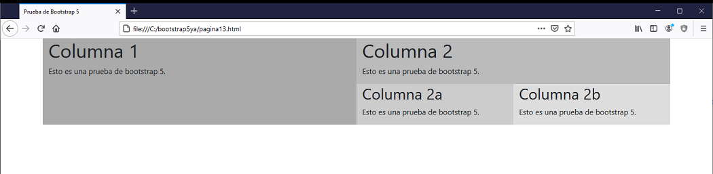
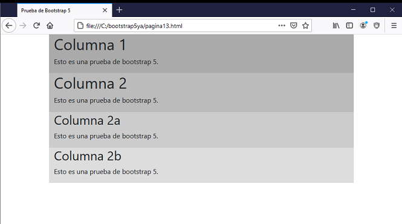

Otro tema perfectamente resuelto por Bootstrap 5 es el anidamiento de columnas.
Implementar una página que muestre dos columnas y dentro de la segunda columna otras dos columnas internas.
<!doctype html>
<html>
<head>
<title>Prueba de Bootstrap 5</title>
<meta charset="utf-8">
<meta name="viewport" content="width=device-width, initial-scale=1, shrink-to-fit=no">
<link href="https://cdn.jsdelivr.net/npm/bootstrap@5.0.0/dist/css/bootstrap.min.css" rel="stylesheet" integrity="sha384-wEmeIV1mKuiNpC+IOBjI7aAzPcEZeedi5yW5f2yOq55WWLwNGmvvx4Um1vskeMj0" crossorigin="anonymous">
</head>
<body>
<div class="container">
<div class="row">
<div class="col-lg-6" style="background-color:#aaa">
<h1>Columna 1</h1>
<p>Esto es una prueba de bootstrap 5.</p>
</div>
<div class="col-lg-6" style="background-color:#bbb">
<h1>Columna 2</h1>
<p>Esto es una prueba de bootstrap 5.</p>
<div class="row">
<div class="col-lg-6" style="background-color:#ccc">
<h2>Columna 2a</h2>
<p>Esto es una prueba de bootstrap 5.</p>
</div>
<div class="col-lg-6" style="background-color:#ddd">
<h2>Columna 2b</h2>
<p>Esto es una prueba de bootstrap 5.</p>
</div>
</div>
</div>
</div>
</div>
</body>
</html>
Lo importante es analizar la segunda columna donde vemos que insertamos además de un título y un párrafo tenemos una nueva fila (row) y dos nuevos div que debemos repartir las doce columnas:
<div class="col-lg-6" style="background-color:#bbb">
<h1>Columna 2</h1>
<p>Esto es una prueba de bootstrap 4.</p>
<div class="row">
<div class="col-lg-6" style="background-color:#ccc">
<h2>Columna 2a</h2>
<p>Esto es una prueba de bootstrap 4.</p>
</div>
<div class="col-lg-6" style="background-color:#ddd">
<h2>Columna 2b</h2>
<p>Esto es una prueba de bootstrap 4.</p>
</div>
</div>
</div>
Podemos observar que la segunda columna contiene a su vez otras dos columnas:

También podemos ver que si reducimos el ancho del navegador colapsan todas las columnas (externas e internas):

Podemos anidar más niveles sin problemas.